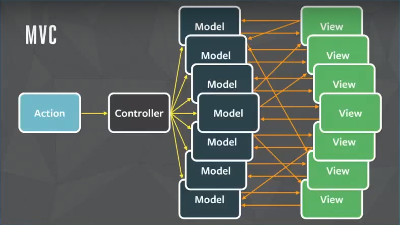

React Native
A FRAMEWORK FOR BUILDING NATIVE APPS USING REACT
MVC 有什麼問題？
怎麼會扯到這個？
因為在React Native之前已經有 PhoneGap / Titanium 等框架
由於出現時間已久
肯定具有上次我介紹Flux的時候 用力批評MVC的問題存在
實際上實作的結果
再次參考一下這個影片吧：
Rethinking Web App Development at Facebook
要改善這件事情必須從架構面開始改
所以要用Javascript 打造iOS/Android App
必須從iOS/Android原生支援的Javascript去打造Library
這就是React Native想做的事情
React Native的精神
並非「只需撰寫一次，到處皆可執行」式的框架
而是提供你 「學好一套技能，到處皆可實作」的框架
基本的建構APP的方式可以參考這篇文章：
React Native Introduction
目前 React Native的狀況
已經支援 Hot Reloading
React Native v0.22 Release Note
可以套用 Flux 架構：
Counter Example
Conclusion & Demo
門檻
Easy for Web Base or App Base ?
Native Library needed ?
以我 Web Base 對前端已經有中階等級程度的開發者來看
App有很多我不太確定怎麼做比較好的行為
對 Mobile App Team呢？
不熟悉 Web 前端恐怕更困難
QNAP現在有著「遠古的UX Team」（對前端來說三年就是遠古了）
會不會 Mobile App Team也是 「遠古」？
給Javascript操作的Native Library他們做得出來嗎？
我們 Team 是否有辦法上手？
可以！！！ 必須要一部份 Web Base的人去學習 Mobile App
只要公司高層有把 「前端的研究」 看重的跟 ML/DNN 以及 Cloud架構一樣重要，就可能......
歡迎大家來學前端（首領好像會Android是吧 開分享會了啊 順便實做一個App看看....)
回到正題，.....
對我們公司目前要引入React Native的最好方式
Mobile App Team要來分享他們寫的App
同時 Mobile App Team也得同步學習 React Native
先從幾個元件的畫面開始改起
慢慢取代掉可以取代的View 核心
我個人不覺得是件容易的事情..... 從上次 Ceasar Chi 來分享 React 之後的冷落響應.....
感謝收聽
Thanks For Listening